中断简介
前言
最近计划学习一下cpu虚拟化相关内容，其中一个重要内容就是中断虚拟化。
在学习中断虚拟化之前，首先需要对中断有基本的了解认识，虽然之前在linux内核硬中断分析中有了解，但比较片面，这里对中断会进行更深入的学习
中断硬件
本质上，内核是操作系统控制硬件的接口，其逻辑实现紧密遵循硬件规范。这种硬件强相关的特性，使得研究cpu的中断硬件机制成为理解内核中断子系统的关键点。
下面介绍一下cpu的中断硬件机制的发展
pic(Programmable Interrupt Controller)
pic，也就是8259A，其是最早的cpu的中断管理芯片，其实物图和结构图如下所示
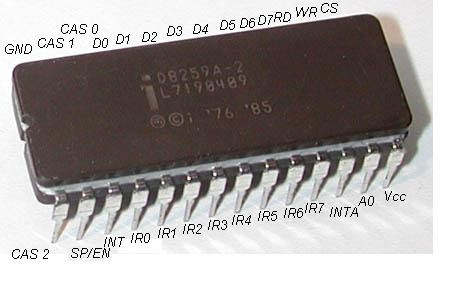
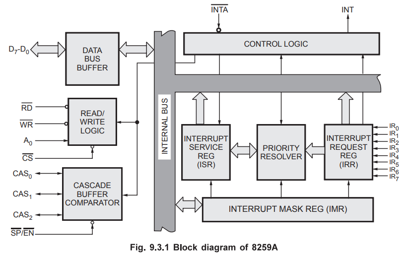
中断设置
按照8259A的手册，一般通过pio的方式完成ICW(Initialization Command Words)和OCW(Operation Command Words)寄存器的读取和设置，从而完成中断触发方式、中断向量基址、中断状态等8259A工作状态的查询和设置，这里不详细介绍了，感兴趣可以查看8259A的手册
中断处理
根据8259A的手册，一个典型的中断处理流程如下所示
- 一个或多个IR引脚发送中断信号(触发方式由ICW1配置)，对应的IRR(Interrupt Request Register)中的相关bit位锁存请求状态(直到后续被清除)
- PR(Priority Resolver)根据中断优先级(OCW2配置)和IMR(Interrupt Mask Register)评估所有的中断请求。如果存在有效请求，并通过INT引脚向CPU发送中断请求信号
- CPU检测到INT信号后，在当前指令执行完毕后发送第一个INTA脉冲(8259A手册规定的电信号)
- 在第一个INTA周期内，8259A会在ISR(Interrupt Service Register)中将当前IRR中最高优先级的IR对应的位进行标记，并清除IRR中相应的bit位标志
- 在第二个INTA周期内，8259A会通过数据总线向CPU发送8位中断类型码(ICW2配置基地址+IRQ编号)
- 最后，根据ICW4配置的模式结束此次中断处理(AEOI模式会自动清除ISR对应的位；否则等到CPU发送EOI命令再清除ISR对应的位)
apic(Advanced Programmable Interrupt Controller)
前面提到的pic只适用于单处理器的中断处理，而对于当前的多CPU，则需要新的中断控制器，即apic。
apic由lapic(local apic)和ioapic(I/O apic)构成，其整体结构图如下所示
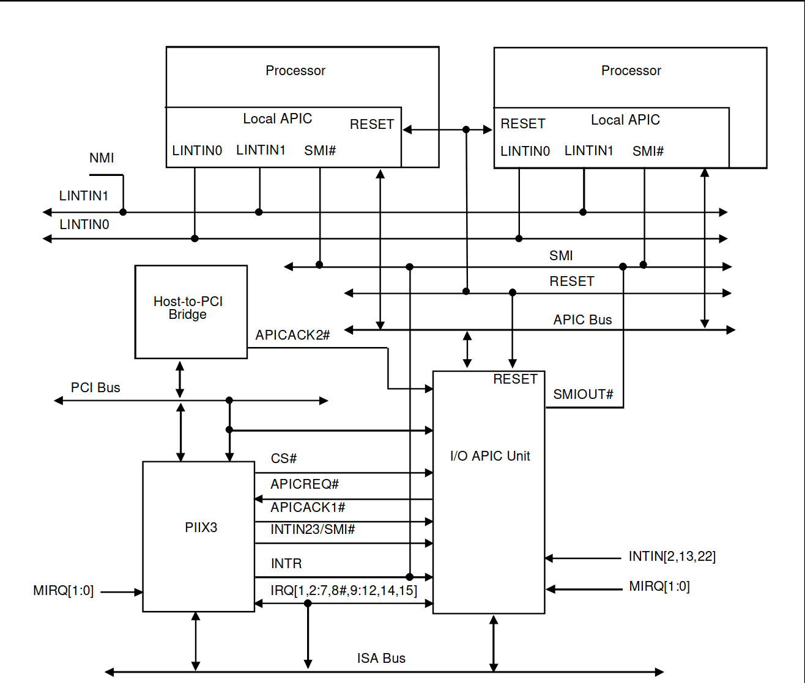
整体上，lapic类似于每个CPU的8259A，用于处理其所在的CPU需要处理的中断；而ioapic则是用来负责统一接受外部设备的中断请求，并重新分配给给不同CPU的lapic
lapic
lapic的主要功能就是接受中断消息或是自身/其他lapic产生的中断，然后通知CPU处理，其整体结构图如下所示
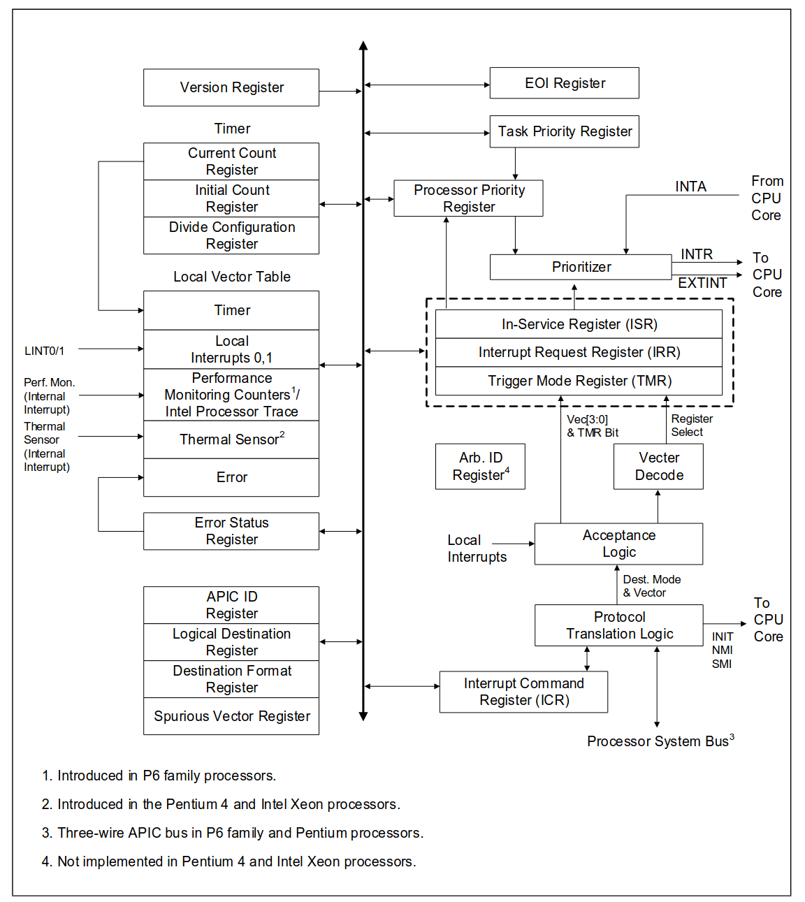
可以看到，其基本和8259A很相似，包括ISR、IRR等，但又新增了很多结构用来实现新增的功能，因此其设置和中断流程大体相似，但又有区别
中断设置
按照apic的手册，lapic的寄存器被默认被映射到起始地址为0xfee00000的连续4KB的物理内存中，可通过IA32_APIC_BASE MSR(Model Specific Register)更改基址。寄存器通过mmio方式进行读取和设置，具体的寄存器布局如下所示
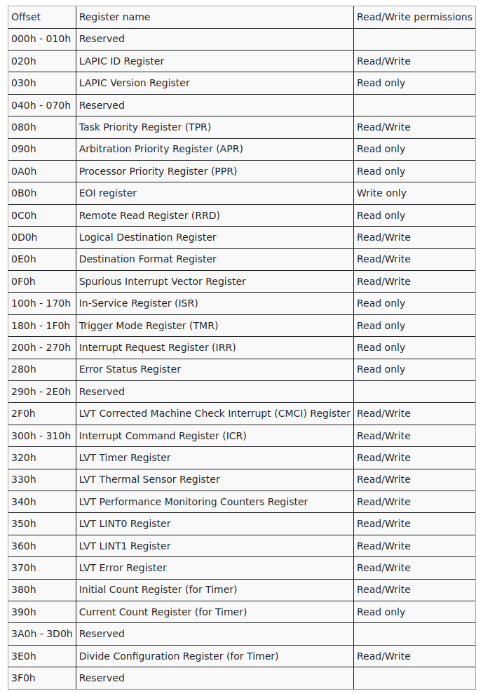
中断处理
lapic可以处理三种中断：本地中断(诸如apic timer generated interrupts等)、IPI(Inter-Processor Interrupts)和ioapic发送的中断。lapic处理这些中断遵循下述流程
- 过滤中断目的地是自己的中断(本地中断目的地始终是自己，IPI和ioapic发送的中断需要根据中断的destination字段判断)
- 如果中断的delivery Mode是NMI(Non-Maskable Interrupt)、SMI(System Management Interrupt)、INIT、ExtINT和SIPI(Start-up IPI)，则直接通过相关引脚将中断发送给CPU，完成此次中断处理
- 对于其他delivery Mode的中断，根据中断号将IRR对应的位进行标记(直到后续被清除)
- lapic基于PPR(Processor Priority Register)评估IRR中所有的中断请求。如果存在有效请求，清除IRR中相应的bit位，标记ISR中相应的bit位，并通过相关引脚将中断发送给CPU
- CPU在处理完中断后，向EOIR(End-Of-Interrupt Register)写入
- lapic清除ISR中相应的bit位，并根据SVR(Spurious Vector Register)内存可能会通过总线向所有ioapic广播EOI
ioapic
ioapic负责接收外部I/O设备的硬件中断，并将其转换成一定格式的消息，通过总线发送给一个或多个lapic，其相关示意图如下所示
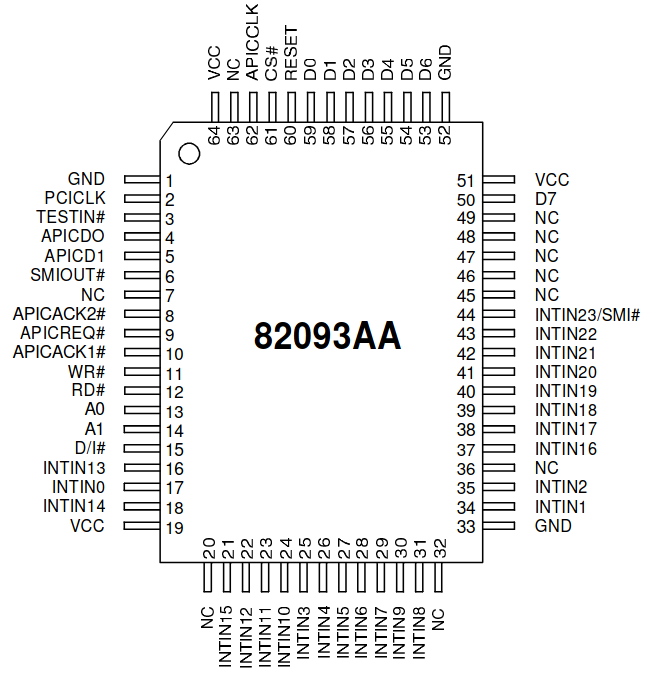
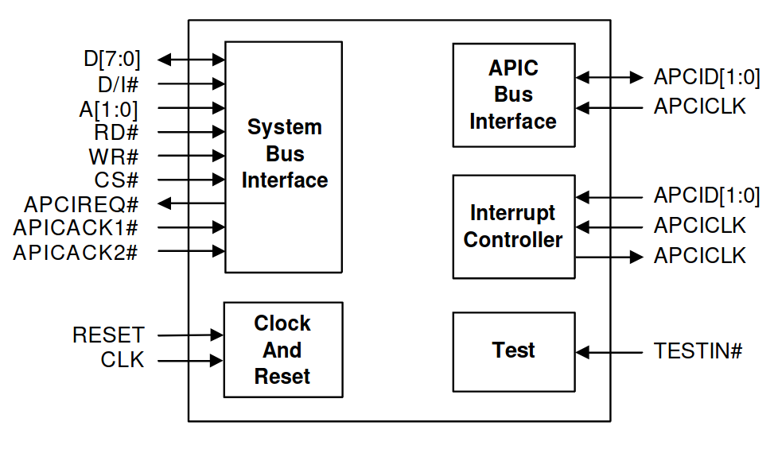
中断设置
和lapic一样，ioapic有大量用于配置/读取工作状态的寄存器。但不同的是，ioapic没有将所有的寄存器直接映射到物理内存上；其仅仅映射了两个寄存器：位于0xfec0xy00(x和y可通过APICBASE寄存器配置)的IOREGSEL(I/O Register Select)，用于要访问的ioapic的寄存器编号；位于0xfec0xy10的IOWIN(I/O Window Register)，用于读写选择的寄存器内容
其中最重要的是IOREDTBL(I/O Redirection Table Registers),其是一张24项的中断重定向表，每项是一个64位的寄存器，对应着ioapic的一个中断引脚的中断重定向配置信息，包含中断向量、中断的destination、中断的delivery mode等内容
中断处理
ioapic的中断处理很简单，每当其收到外部I/O设备通过中断引脚发送的中断信号后，其会根据中断引脚对应的IOREDTBL中的重定向表项格式化出一条消息，并通过总线发送给destination字段指定的lapic
msi(Message Signaled Interrupt)
在早期的计算机架构中，外设硬件中断主要通过ioapic转发至各cpu的lapic。但随着pci/pcie设备呈指数级增长，传统中断机制暴露出诸多局限性。
为此，pci规范在2.2版本引入了msi(Message Signaled Interrupt)机制，其让pci设备通过pci总线存储器写事务，将特定的消息地址(message address)和消息数据(message data)直接写入内存映射的lapic寄存器中，从而绕过ioapic直接向lapic发送中断通知，其整体的架构图如下所示(具体硬件连线细节不一定准确，主要表现绕过ioapic)
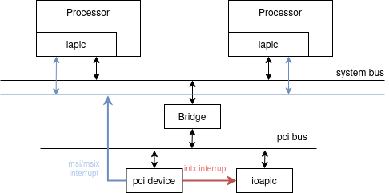
中断设置
pci的msi中断的设置是通过pci的配置空间实现的，前面博客qemu的PCI设备中简单介绍过，其配置空间如下所示
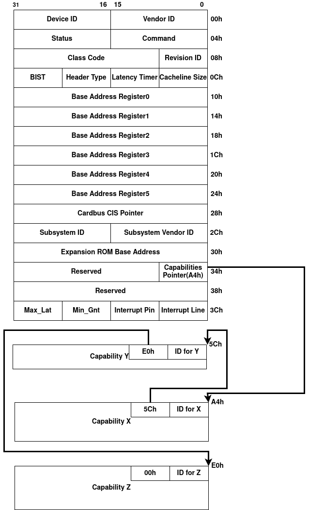
其中，msi的配置通过msi capability/msix capability实现
msi capability
msi capability的结构如下所示
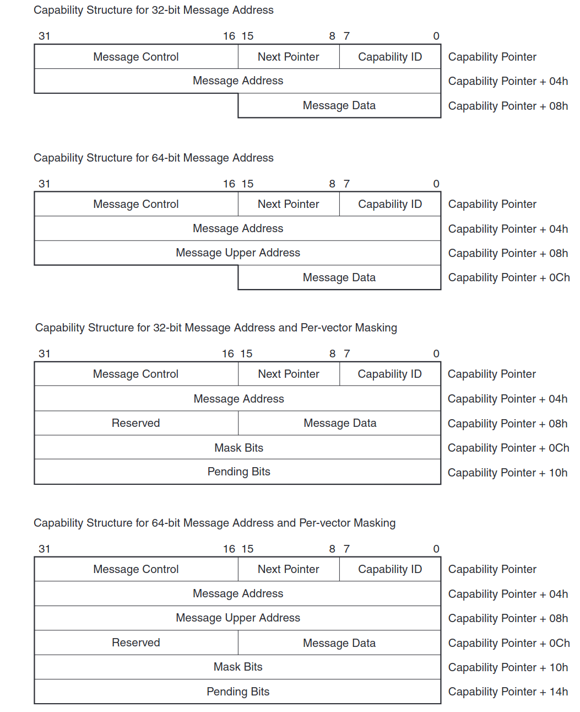
可以看到，其有多个字段，但重点是Message Address(Message Upper Address)和Message Data字段
其中Message Address的结构如下所示，其定义了pci设备发出中断时内存写TLP的目的地址
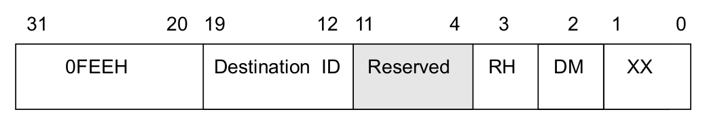
而Message Data则定义了写入的内容，用来描述中断的相关信息，其结构如下所示
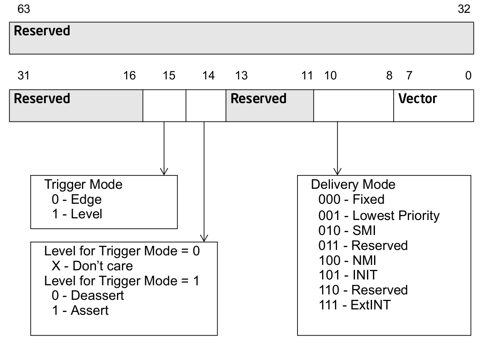
msix capability
msix capability的结构如下所示
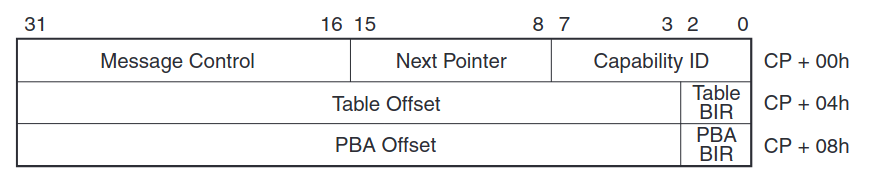
与msi capability不同的是，其使用一个数组存放Message Address字段和Message Data字段，数组结构如下所示
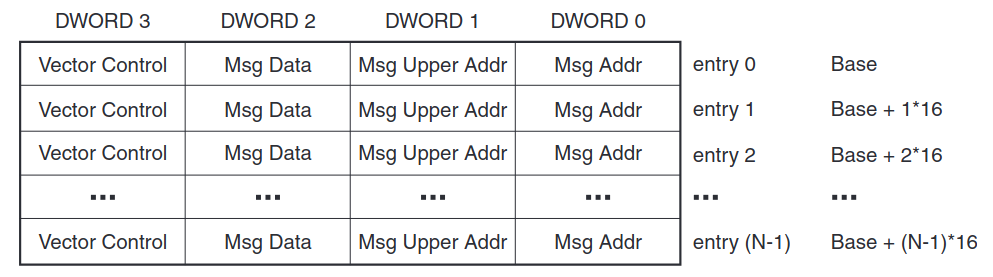
中断处理
pci的中断处理遵循下述流程
- 当pci设备需要发起中断请求时，pci硬件会向capability中设置的Message Address地址写Message Data数据，其会以存储器写TLP的形式发送到RC(Root Complex)
- RC收到后，将其转换为interrupt message总线事务并广播，与ioapic操作类似
中断子系统
中断子系统负责统一管理硬件中断资源，其接收并路由硬件中断信号，将其转换为对应的虚拟中断号，并调用注册的中断服务例程
硬件中断
不同架构下中断触发的CPU硬件行为是不一致的，因此其会有不一样的硬件中断管理机制，这里以x86平台为例进行分析
根据前面中断硬件的介绍，内核会在系统初始化阶段配置中断控制器的中断向量信息。当中断触发时，处理器会接收包含中断对应中断向量的信号，并将该中断向量作为索引值，访问IDT中对应的门描述符从而进行处理，如下所示
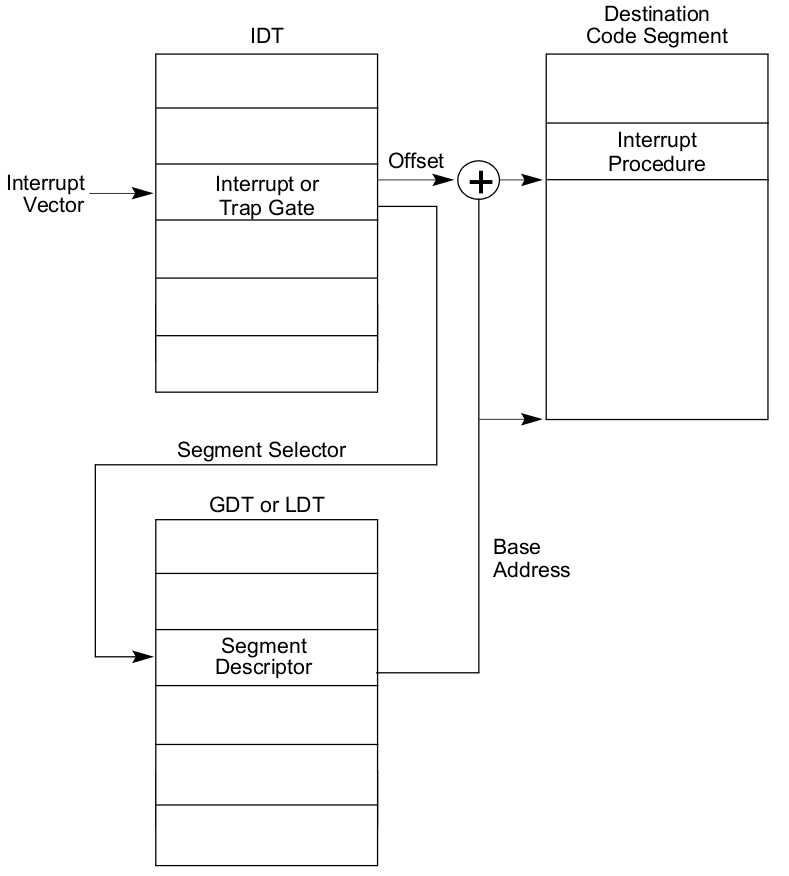
中断子系统会在idt_setup_apic_and_irq_gates中初始化该IDT，如下所示1
2
3
4
5
6
7
8
9
10
11
12
13
14
15
16
17
18//#0 idt_setup_apic_and_irq_gates () at arch/x86/kernel/idt.c:282
//#1 0xffffffff832a7262 in native_init_IRQ () at arch/x86/kernel/irqinit.c:103
//#2 0xffffffff8329ab9b in start_kernel () at init/main.c:977
//#3 0xffffffff832a59a8 in x86_64_start_reservations (real_mode_data=real_mode_data@entry=0x14770 <entry_stack_storage+1904> <error: Cannot access memory at address 0x14770>) at arch/x86/kernel/head64.c:507
//#4 0xffffffff832a5ae6 in x86_64_start_kernel (real_mode_data=0x14770 <entry_stack_storage+1904> <error: Cannot access memory at address 0x14770>) at arch/x86/kernel/head64.c:488
//#5 0xffffffff810a96f6 in secondary_startup_64 () at arch/x86/kernel/head_64.S:420
//#6 0x0000000000000000 in ?? ()
void __init idt_setup_apic_and_irq_gates(void)
{
int i = FIRST_EXTERNAL_VECTOR;
void *entry;
...
for_each_clear_bit_from(i, system_vectors, FIRST_SYSTEM_VECTOR) {
entry = irq_entries_start + IDT_ALIGN * (i - FIRST_EXTERNAL_VECTOR);
set_intr_gate(i, entry);
}
...
}
可以看到，其设置中断向量从FIRST_EXTERNAL_VECTOR到FIRST_SYSTEM_VECTOR之间的中断的入口函数为irq_entries_start所在的代码段中1
2
3
4
5
6
7
8
9
10
11
12
13
14
15
16
17
18
19
20
21
22
23
24
25
26
27
28/*
* ASM code to emit the common vector entry stubs where each stub is
* packed into IDT_ALIGN bytes.
*
* Note, that the 'pushq imm8' is emitted via '.byte 0x6a, vector' because
* GCC treats the local vector variable as unsigned int and would expand
* all vectors above 0x7F to a 5 byte push. The original code did an
* adjustment of the vector number to be in the signed byte range to avoid
* this. While clever it's mindboggling counterintuitive and requires the
* odd conversion back to a real vector number in the C entry points. Using
* .byte achieves the same thing and the only fixup needed in the C entry
* point is to mask off the bits above bit 7 because the push is sign
* extending.
*/
.align IDT_ALIGN
SYM_CODE_START(irq_entries_start)
vector=FIRST_EXTERNAL_VECTOR
.rept NR_EXTERNAL_VECTORS
UNWIND_HINT_IRET_REGS
0 :
ENDBR
.byte 0x6a, vector
jmp asm_common_interrupt
/* Ensure that the above is IDT_ALIGN bytes max */
.fill 0b + IDT_ALIGN - ., 1, 0xcc
vector = vector+1
.endr
SYM_CODE_END(irq_entries_start)
irq_entries_start的代码段会push对应的中断向量，并调用asm_common_interrupt函数。
这里asm_common_inerrupt由DECLARE_IDTENTRY_IRQ宏在arch/x86/entry/entry_64.S文件中定义，如下所示1
2
3
4
5
6
7
8
9
10
11
12
13
14
15
16
17
18
19
20
21
22
23
24
25
26
27
28
29
30
31
32
33
34
35
36
37
38
39
40
41
42
43
44
45
46
47
48
49
50
51
52
53
54
55
56
57
58
59
60
61
62
63
64
65
66
67
68
69
70
71
72
73
74
75
76
77
78
79
80
81
82
83
84
85
86
87
88
89
90
91
92
93
94
95
96
97
98
99
100
101
102
103
104
105
106
107
108
109DECLARE_IDTENTRY_IRQ(X86_TRAP_OTHER, common_interrupt);
...
/* Entries for common/spurious (device) interrupts */
/*
* Interrupt entry/exit.
*
+ The interrupt stubs push (vector) onto the stack, which is the error_code
* position of idtentry exceptions, and jump to one of the two idtentry points
* (common/spurious).
*
* common_interrupt is a hotpath, align it to a cache line
*/
.macro idtentry_irq vector cfunc
.p2align CONFIG_X86_L1_CACHE_SHIFT
idtentry \vector asm_\cfunc \cfunc has_error_code=1
.endm
/**
* idtentry - Macro to generate entry stubs for simple IDT entries
* @vector: Vector number
* @asmsym: ASM symbol for the entry point
* @cfunc: C function to be called
* @has_error_code: Hardware pushed error code on stack
*
* The macro emits code to set up the kernel context for straight forward
* and simple IDT entries. No IST stack, no paranoid entry checks.
*/
.macro idtentry vector asmsym cfunc has_error_code:req
SYM_CODE_START(\asmsym)
.if \vector == X86_TRAP_BP
/* #BP advances %rip to the next instruction */
UNWIND_HINT_IRET_ENTRY offset=\has_error_code*8 signal=0
.else
UNWIND_HINT_IRET_ENTRY offset=\has_error_code*8
.endif
ENDBR
ASM_CLAC
cld
.if \has_error_code == 0
pushq $-1 /* ORIG_RAX: no syscall to restart */
.endif
.if \vector == X86_TRAP_BP
/*
* If coming from kernel space, create a 6-word gap to allow the
* int3 handler to emulate a call instruction.
*/
testb $3, CS-ORIG_RAX(%rsp)
jnz .Lfrom_usermode_no_gap_\@
.rept 6
pushq 5*8(%rsp)
.endr
UNWIND_HINT_IRET_REGS offset=8
.Lfrom_usermode_no_gap_\@:
.endif
idtentry_body \cfunc \has_error_code
_ASM_NOKPROBE(\asmsym)
SYM_CODE_END(\asmsym)
.endm
/**
* idtentry_body - Macro to emit code calling the C function
* @cfunc: C function to be called
* @has_error_code: Hardware pushed error code on stack
*/
.macro idtentry_body cfunc has_error_code:req
/*
* Call error_entry() and switch to the task stack if from userspace.
*
* When in XENPV, it is already in the task stack, and it can't fault
* for native_iret() nor native_load_gs_index() since XENPV uses its
* own pvops for IRET and load_gs_index(). And it doesn't need to
* switch the CR3. So it can skip invoking error_entry().
*/
ALTERNATIVE "call error_entry; movq %rax, %rsp", \
"call xen_error_entry", X86_FEATURE_XENPV
ENCODE_FRAME_POINTER
UNWIND_HINT_REGS
movq %rsp, %rdi /* pt_regs pointer into 1st argument*/
.if \has_error_code == 1
movq ORIG_RAX(%rsp), %rsi /* get error code into 2nd argument*/
movq $-1, ORIG_RAX(%rsp) /* no syscall to restart */
.endif
call \cfunc
/* For some configurations \cfunc ends up being a noreturn. */
REACHABLE
jmp error_return
.endm
...
在DECLARE_IDTENTRY_IRQ宏，其使用idtentry定义和实现asm_common_interrupt，最终会调用common_interrupt进行处理。
而commont_interrupt是由DEFINE_IDTENTRY_IRQ宏在arch/x86/kernel/irq.c中实现，如下所示
1 |
|
虚拟中断
上面只介绍了x86体系下的硬件中断资源的管理，实际上不同的体系架构有不同的处理方式。linux内核为了屏蔽这些不同，会以虚拟中断的形式向其他子系统或驱动提供服务，其中每一个硬件中断会分配一个全局唯一的虚拟中断，由struct irq_desc描述，统一存储在sparse_irqs变量中
1 | static struct maple_tree sparse_irqs = MTREE_INIT_EXT(sparse_irqs, |
其中，handle_irq和action是struct irq_desc最重要的两个字段。handle_irq负责处理中断的硬件清理操作并触发驱动注册的中断处理程序；action则记录所有驱动注册的用于处理该中断的处理程序。
linux内核使用alloc_desc()分配虚拟中断资源，使用__irq_set_handler()设置虚拟中断的handler_irq字段，并使用request_irq为驱动注册中断对应的处理程序。这里以管理virtio-net-pci设备的虚拟中断为例进行分析，如下所示
1 | //#0 irq_insert_desc (desc=0xffff888100844200, irq=25) at kernel/irq/irqdesc.c:170 |
可以看到，在virtio设备驱动的中断初始化过程中，会调用__irq_domain_alloc_irqs()与对应的irq domain进行交互并最终调用irq_insert_desc()完成虚拟中断资源的分配并添加到sparse_irqs中。
其中irq domain代表着一个中断控制器，在这里是MSI irq domain。由于一个中断传送到CPU过程中可能需要多个中断控制器参与，所以irq domain往往会构成层次结构：这里则是MSI irq domain(设备中断控制器)->cpu vector irq domain(apic中断控制器)
1 | //#0 __irq_do_set_handler (desc=desc@entry=0xffff888100844200, handle=handle@entry=0xffffffff811856e0 <handle_edge_irq>, is_chained=is_chained@entry=0, name=name@entry=0xffffffff82707bf8 "edge") at kernel/irq/chip.c:988 |
在与irq domain交互分配虚拟中断资源的过程中，irq domain还会设置虚拟中断的handle_irq字段，从而设置中断控制器要求的硬件清理操作。这里被赋值为handle_edge_irq()函数去完成硬件清理操作并触发驱动注册的中断处理程序
1 | //#0 request_threaded_irq (irq=25, handler=0xffffffff81694d10 <vring_interrupt>, thread_fn=thread_fn@entry=0x0 <fixed_percpu_data>, irqflags=irqflags@entry=0, devname=devname@entry=0xffff888113134900 "virtio0-input.0", dev_id=dev_id@entry=0xffff888110171300) at kernel/irq/manage.c:2150 |
在完成虚拟中断资源的分配和设置后，virtio驱动会调用request_irq()来注册中断的业务处理回调函数，这里是vring_interrupt()，并在前面设置的handle_irq函数指针中被调用，如下所示
1 | //#0 vring_interrupt (irq=25, _vq=0xffff888110171300) at drivers/virtio/virtio_ring.c:2571 |
中断路由
中断路由的核心是建立硬件中断(apic中断的向量vector)到虚拟中断(linux irq)的映射关系。
根据前面硬件中断小节可知，在X86架构下，vector_irq为其核心映射表，其更新通过apic_update_vector()实现，如下所示1
2
3
4
5
6
7
8
9
10
11
12
13
14
15
16
17
18
19
20
21
22
23
24
25
26
27
28
29
30
31
32
33
34
35
36
37
38
39
40
41
42
43
44
45
46
47
48
49
50
51
52
53
54
55
56
57
58
59
60
61
62
63
64
65
66
67
68
69
70
71
72
73
74
75
76
77
78
79
80
81
82
83
84
85
86//#0 apic_update_vector (irqd=irqd@entry=0xffff888107167a80, newvec=newvec@entry=33, newcpu=1) at arch/x86/kernel/apic/vector.c:91
//#1 0xffffffff810f315d in assign_vector_locked (irqd=0xffff888107167a80, dest=dest@entry=0xffffffff8353f0b0 <vector_searchmask>) at arch/x86/kernel/apic/vector.c:263
//#2 0xffffffff810f32e0 in assign_irq_vector_any_locked (irqd=irqd@entry=0xffff888107167a80) at arch/x86/kernel/apic/vector.c:296
//#3 0xffffffff810f343f in activate_reserved (irqd=0xffff888107167a80) at arch/x86/kernel/apic/vector.c:404
//#4 x86_vector_activate (dom=<optimized out>, irqd=0xffff888107167a80, reserve=<optimized out>) at arch/x86/kernel/apic/vector.c:473
//#5 0xffffffff8119b30b in __irq_domain_activate_irq (irqd=0xffff888107167a80, reserve=reserve@entry=false) at kernel/irq/irqdomain.c:1830
//#6 0xffffffff8119b2ed in __irq_domain_activate_irq (irqd=irqd@entry=0xffff888107011e28, reserve=reserve@entry=false) at kernel/irq/irqdomain.c:1827
//#7 0xffffffff8119d638 in irq_domain_activate_irq (irq_data=irq_data@entry=0xffff888107011e28, reserve=reserve@entry=false) at kernel/irq/irqdomain.c:1853
//#8 0xffffffff81199963 in irq_activate (desc=desc@entry=0xffff888107011e00) at kernel/irq/chip.c:293
//#9 0xffffffff81196712 in __setup_irq (irq=irq@entry=25, desc=desc@entry=0xffff888107011e00, new=new@entry=0xffff8881071b2300) at kernel/irq/manage.c:1754
//#10 0xffffffff81196ceb in request_threaded_irq (irq=25, handler=0xffffffff816a8250 <vring_interrupt>, thread_fn=thread_fn@entry=0x0 <fixed_percpu_data>, irqflags=irqflags@entry=0, devname=devname@entry=0xffff88810706fd00 "virtio0-input.0", dev_id=dev_id@entry=0xffff8881071aad00) at kernel/irq/manage.c:2207
//#11 0xffffffff816adbbc in request_irq (dev=0xffff8881071aad00, name=0xffff88810706fd00 "virtio0-input.0", flags=0, handler=<optimized out>, irq=<optimized out>) at ./include/linux/interrupt.h:171
//#12 vp_find_vqs_msix (vdev=vdev@entry=0xffff88810708b000, nvqs=nvqs@entry=3, vqs=vqs@entry=0xffff888100ed3c20, callbacks=callbacks@entry=0xffff888100ed3c40, names=names@entry=0xffff888100ed3c60, per_vq_vectors=per_vq_vectors@entry=true, ctx=0xffff888100f11978, desc=0x0 <fixed_percpu_data>) at drivers/virtio/virtio_pci_common.c:347
//#13 0xffffffff816ade24 in vp_find_vqs (vdev=vdev@entry=0xffff88810708b000, nvqs=3, vqs=0xffff888100ed3c20, callbacks=0xffff888100ed3c40, names=0xffff888100ed3c60, ctx=0xffff888100f11978, desc=0x0 <fixed_percpu_data>) at drivers/virtio/virtio_pci_common.c:408
//#14 0xffffffff816ac336 in vp_modern_find_vqs (vdev=0xffff88810708b000, nvqs=<optimized out>, vqs=<optimized out>, callbacks=<optimized out>, names=<optimized out>, ctx=<optimized out>, desc=0x0 <fixed_percpu_data>) at drivers/virtio/virtio_pci_modern.c:604
//#15 0xffffffff81a08285 in virtio_find_vqs_ctx (desc=0x0 <fixed_percpu_data>, ctx=0xffff888100f11978, names=0xffff888100ed3c60, callbacks=0xffff888100ed3c40, vqs=0xffff888100ed3c20, nvqs=3, vdev=0xffff888107167a80) at ./include/linux/virtio_config.h:242
//#16 virtnet_find_vqs (vi=0xffff8881070a8920) at drivers/net/virtio_net.c:4389
//#17 init_vqs (vi=0xffff8881070a8920) at drivers/net/virtio_net.c:4478
//#18 0xffffffff81a09a4e in virtnet_probe (vdev=0xffff88810708b000) at drivers/net/virtio_net.c:4799
//#19 0xffffffff816a6f5b in virtio_dev_probe (_d=0xffff88810708b010) at drivers/virtio/virtio.c:311
//#20 0xffffffff81951d19 in call_driver_probe (drv=0xffffffff82c10240 <virtio_net_driver>, dev=0xffff88810708b010) at drivers/base/dd.c:578
//#21 really_probe (dev=dev@entry=0xffff88810708b010, drv=drv@entry=0xffffffff82c10240 <virtio_net_driver>) at drivers/base/dd.c:656
//#22 0xffffffff81951f8e in __driver_probe_device (drv=drv@entry=0xffffffff82c10240 <virtio_net_driver>, dev=dev@entry=0xffff88810708b010) at drivers/base/dd.c:798
//#23 0xffffffff81952069 in driver_probe_device (drv=drv@entry=0xffffffff82c10240 <virtio_net_driver>, dev=dev@entry=0xffff88810708b010) at drivers/base/dd.c:828
//#24 0xffffffff819522e5 in __driver_attach (data=0xffffffff82c10240 <virtio_net_driver>, dev=0xffff88810708b010) at drivers/base/dd.c:1214
//#25 __driver_attach (dev=0xffff88810708b010, data=0xffffffff82c10240 <virtio_net_driver>) at drivers/base/dd.c:1154
//#26 0xffffffff8194fab4 in bus_for_each_dev (bus=<optimized out>, start=start@entry=0x0 <fixed_percpu_data>, data=data@entry=0xffffffff82c10240 <virtio_net_driver>, fn=fn@entry=0xffffffff81952260 <__driver_attach>) at drivers/base/bus.c:368
//#27 0xffffffff819516f9 in driver_attach (drv=drv@entry=0xffffffff82c10240 <virtio_net_driver>) at drivers/base/dd.c:1231
//#28 0xffffffff81950e97 in bus_add_driver (drv=drv@entry=0xffffffff82c10240 <virtio_net_driver>) at drivers/base/bus.c:673
//#29 0xffffffff8195348b in driver_register (drv=drv@entry=0xffffffff82c10240 <virtio_net_driver>) at drivers/base/driver.c:246
//#30 0xffffffff816a66bb in register_virtio_driver (driver=driver@entry=0xffffffff82c10240 <virtio_net_driver>) at drivers/virtio/virtio.c:370
//#31 0xffffffff832fbbf9 in virtio_net_driver_init () at drivers/net/virtio_net.c:5050
//#32 0xffffffff81001a60 in do_one_initcall (fn=0xffffffff832fbb70 <virtio_net_driver_init>) at init/main.c:1238
//#33 0xffffffff8329e1d7 in do_initcall_level (command_line=0xffff8881002c2280 "rdinit", level=6) at init/main.c:1300
//#34 do_initcalls () at init/main.c:1316
//#35 do_basic_setup () at init/main.c:1335
//#36 kernel_init_freeable () at init/main.c:1548
//#37 0xffffffff81fa3a85 in kernel_init (unused=<optimized out>) at init/main.c:1437
//#38 0xffffffff810cea7c in ret_from_fork (prev=<optimized out>, regs=0xffffc90000013f58, fn=0xffffffff81fa3a70 <kernel_init>, fn_arg=0x0 <fixed_percpu_data>) at arch/x86/kernel/process.c:147
//#39 0xffffffff8100244a in ret_from_fork_asm () at arch/x86/entry/entry_64.S:243
//#40 0x0000000000000000 in ?? ()
static void apic_update_vector(struct irq_data *irqd, unsigned int newvec,
unsigned int newcpu)
{
struct apic_chip_data *apicd = apic_chip_data(irqd);
struct irq_desc *desc = irq_data_to_desc(irqd);
bool managed = irqd_affinity_is_managed(irqd);
lockdep_assert_held(&vector_lock);
trace_vector_update(irqd->irq, newvec, newcpu, apicd->vector,
apicd->cpu);
/*
* If there is no vector associated or if the associated vector is
* the shutdown vector, which is associated to make PCI/MSI
* shutdown mode work, then there is nothing to release. Clear out
* prev_vector for this and the offlined target case.
*/
apicd->prev_vector = 0;
if (!apicd->vector || apicd->vector == MANAGED_IRQ_SHUTDOWN_VECTOR)
goto setnew;
/*
* If the target CPU of the previous vector is online, then mark
* the vector as move in progress and store it for cleanup when the
* first interrupt on the new vector arrives. If the target CPU is
* offline then the regular release mechanism via the cleanup
* vector is not possible and the vector can be immediately freed
* in the underlying matrix allocator.
*/
if (cpu_online(apicd->cpu)) {
apicd->move_in_progress = true;
apicd->prev_vector = apicd->vector;
apicd->prev_cpu = apicd->cpu;
WARN_ON_ONCE(apicd->cpu == newcpu);
} else {
irq_matrix_free(vector_matrix, apicd->cpu, apicd->vector,
managed);
}
setnew:
apicd->vector = newvec;
apicd->cpu = newcpu;
BUG_ON(!IS_ERR_OR_NULL(per_cpu(vector_irq, newcpu)[newvec]));
per_cpu(vector_irq, newcpu)[newvec] = desc;
}
可以看到，构建x86的中断路由的逻辑是比较清晰的：Linux内核首先分配虚拟中断资源；然后与irq domain进行交互，完成硬件中断资源的分配与设置后；最后更新vector_irq数组，完成硬件中断到虚拟中断的映射即可
中断下半部
根据前面中断硬件的介绍，在CPU处理中断的过程中会屏蔽相关中断，直到CPU完成中断处理并发送EOI命令。如果中断处理程序耗时过长，则会导致其他中断得不到有效处理，导致硬件中断丢失。为了避免这种情况，Linux内核把中断处理分为中断上半部和中断下半部：其中中断上半部在中断屏蔽期间执行，其主要快速响应硬件并调度中断下半部的执行；而中断下半部用于异步的处理耗时任务。
目前主要的中断下半部包括softirq(软中断)、tasklet和workqueue。其中tasklet基于softirq，都运行在软中断上下文中；而workqueue则运行在内核进程上下文中
softirq
softirq事件
softirq事件在Linux内核编译时就确定好的，每个软中断号对应一个事件1
2
3
4
5
6
7
8
9
10
11
12
13
14
15enum
{
HI_SOFTIRQ=0,
TIMER_SOFTIRQ,
NET_TX_SOFTIRQ,
NET_RX_SOFTIRQ,
BLOCK_SOFTIRQ,
IRQ_POLL_SOFTIRQ,
TASKLET_SOFTIRQ,
SCHED_SOFTIRQ,
HRTIMER_SOFTIRQ,
RCU_SOFTIRQ, /* Preferable RCU should always be the last softirq */
NR_SOFTIRQS
};
其内部使用数组softirq_vec管理事件的handler，并使用open_softirq()注册handler1
2
3
4
5
6static struct softirq_action softirq_vec[NR_SOFTIRQS] __cacheline_aligned_in_smp;
void open_softirq(int nr, void (*action)(struct softirq_action *))
{
softirq_vec[nr].action = action;
}
一般的，中断上半部中会调用raise_softirq()标记待处理的软中断事件，后续会在异步执行的中断下半部中调用__do_softirq()处理软中断事件
1 |
|
可以看到，其软中断处理逻辑还是很清晰。当中断上半部准备产生一个需要异步处理的软中断事件时，其会标记软中断事件号对应的比特。而当中断下半部准备处理软中断事件时，其会执行所有被标记的软中断事件的handler
触发时机
如前面所说，被标记的软中断任务会在中断下半部被异步地执行。其执行操作主要在以下两个时机被调度触发
- CPU调度到ksoftirqd内核线程
- 在中断上半部(硬件中断处理程序)退出时(irq_exit_rcu)
ksoftirqd
linux内核会在spawn_ksoftirqd()中为每一个CPU都初始化一个ksoftirqd内核线程，专门用于处理softirq事件1
2
3
4
5
6
7
8
9
10
11
12
13
14
15
16
17//#0 spawn_ksoftirqd () at kernel/softirq.c:972
//#1 0xffffffff81001a60 in do_one_initcall (fn=0xffffffff832c8940 <spawn_ksoftirqd>) at init/main.c:1238
//#2 0xffffffff8329e100 in do_pre_smp_initcalls () at init/main.c:1344
//#3 kernel_init_freeable () at init/main.c:1537
//#4 0xffffffff81fa3a85 in kernel_init (unused=<optimized out>) at init/main.c:1437
//#5 0xffffffff810cea7c in ret_from_fork (prev=<optimized out>, regs=0xffffc90000013f58, fn=0xffffffff81fa3a70 <kernel_init>, fn_arg=0x0 <fixed_percpu_data>) at arch/x86/kernel/process.c:147
//#6 0xffffffff8100244a in ret_from_fork_asm () at arch/x86/entry/entry_64.S:243
//#7 0x0000000000000000 in ?? ()
static __init int spawn_ksoftirqd(void)
{
cpuhp_setup_state_nocalls(CPUHP_SOFTIRQ_DEAD, "softirq:dead", NULL,
takeover_tasklets);
BUG_ON(smpboot_register_percpu_thread(&softirq_threads));
return 0;
}
early_initcall(spawn_ksoftirqd);
可以看到，其在内核初始化阶段，基于softirq_threads参数调用smpboot_register_percpu_thread()为每个CPU创建内核线程1
2
3
4
5
6
7
8
9
10
11
12
13
14
15
16
17
18
19
20
21
22
23
24
25
26
27
28
29
30
31
32
33
34
35
36
37
38
39
40
41
42
43
44
45
46
47
48
49
50
51
52
53
54
55
56
57
58
59
60
61
62
63
64
65
66
67
68
69
70
71
72
73
74
75
76
77
78
79
80
81
82
83
84
85
86static struct smp_hotplug_thread softirq_threads = {
.store = &ksoftirqd,
.thread_should_run = ksoftirqd_should_run,
.thread_fn = run_ksoftirqd,
.thread_comm = "ksoftirqd/%u",
};
/**
* smpboot_register_percpu_thread - Register a per_cpu thread related
* to hotplug
* @plug_thread: Hotplug thread descriptor
*
* Creates and starts the threads on all online cpus.
*/
int smpboot_register_percpu_thread(struct smp_hotplug_thread *plug_thread)
{
unsigned int cpu;
int ret = 0;
cpus_read_lock();
mutex_lock(&smpboot_threads_lock);
for_each_online_cpu(cpu) {
ret = __smpboot_create_thread(plug_thread, cpu);
if (ret) {
smpboot_destroy_threads(plug_thread);
goto out;
}
smpboot_unpark_thread(plug_thread, cpu);
}
list_add(&plug_thread->list, &hotplug_threads);
out:
mutex_unlock(&smpboot_threads_lock);
cpus_read_unlock();
return ret;
}
static int
__smpboot_create_thread(struct smp_hotplug_thread *ht, unsigned int cpu)
{
struct task_struct *tsk = *per_cpu_ptr(ht->store, cpu);
struct smpboot_thread_data *td;
if (tsk)
return 0;
td = kzalloc_node(sizeof(*td), GFP_KERNEL, cpu_to_node(cpu));
if (!td)
return -ENOMEM;
td->cpu = cpu;
td->ht = ht;
tsk = kthread_create_on_cpu(smpboot_thread_fn, td, cpu,
ht->thread_comm);
...
return 0;
}
/**
* smpboot_thread_fn - percpu hotplug thread loop function
* @data: thread data pointer
*
* Checks for thread stop and park conditions. Calls the necessary
* setup, cleanup, park and unpark functions for the registered
* thread.
*
* Returns 1 when the thread should exit, 0 otherwise.
*/
static int smpboot_thread_fn(void *data)
{
struct smpboot_thread_data *td = data;
struct smp_hotplug_thread *ht = td->ht;
while (1) {
set_current_state(TASK_INTERRUPTIBLE);
preempt_disable();
...
if (!ht->thread_should_run(td->cpu)) {
preempt_enable_no_resched();
schedule();
} else {
__set_current_state(TASK_RUNNING);
preempt_enable();
ht->thread_fn(td->cpu);
}
}
}
整体逻辑也很清晰，smpboot_register_percpu_thread()会给每个CPU创建一个执行smpboot_thread_fn()循环的内核线程。在循环里会调用回调函数run_ksoftirqd()函数，并最终调用__do_softirq()处理softirq事件
irq_exit_rcu
前面硬件中断小节介绍了，中断上半部的handler由DEFINE_IDTENTRY_IRQ宏定义，其在handler最后会调用到irq_exit_rcu()，并触发invoke_softirq()1
2
3
4
5
6
7
8
9
10
11
12
13
14
15
16
17
18
19
20
21
22
23
24
25
26
27
28
29
30
31
32
33
34
35
36
37
38
39
40
41
42
43
44
45
46
47
48
49
50
51
52
53
54
55
56
57
58
59
60
61
62
63
64
65
66
67
68
69
70
71
72
73
74
75
76
77
78
79
80
81
82
83
84
85
86
call_on_irqstack_cond(func, regs, ASM_CALL_IRQ, \
IRQ_CONSTRAINTS, regs, vector); \
}
/*
* Macro to invoke system vector and device interrupt C handlers.
*/
irq_enter_rcu(); \
func(c_args); \
irq_exit_rcu(); \
...
}
void irq_exit_rcu(void)
{
__irq_exit_rcu();
/* must be last! */
lockdep_hardirq_exit();
}
static inline void __irq_exit_rcu(void)
{
local_irq_disable();
lockdep_assert_irqs_disabled();
account_hardirq_exit(current);
preempt_count_sub(HARDIRQ_OFFSET);
if (!in_interrupt() && local_softirq_pending())
invoke_softirq();
tick_irq_exit();
}
//#0 invoke_softirq () at kernel/softirq.c:421
//#1 __irq_exit_rcu () at kernel/softirq.c:633
//#2 irq_exit_rcu () at kernel/softirq.c:645
//#3 0xffffffff81f8aabe in common_interrupt (regs=0xffffc9000009be38, error_code=<optimized out>) at arch/x86/kernel/irq.c:247
static inline void invoke_softirq(void)
{
if (!force_irqthreads() || !__this_cpu_read(ksoftirqd)) {
/*
* We can safely execute softirq on the current stack if
* it is the irq stack, because it should be near empty
* at this stage.
*/
__do_softirq();
/*
* Otherwise, irq_exit() is called on the task stack that can
* be potentially deep already. So call softirq in its own stack
* to prevent from any overrun.
*/
do_softirq_own_stack();
} else {
wakeup_softirqd();
}
}
而在invoke_softirq()中，其会直接调用__do_softirq()直接处理软中断时间或是唤醒ksoftirqd内核线程去处理
tasklet
由于softirq事件在内核编译时就确定了，如果想新添加还需要修改并重新编译内核，这是无法接受的。因此内核实现了一种更常用的中断下半部，即tasklet。tasklet构建在softirq之上，其实现基于两个softirq事件，TASKLET_SOFTIRQ和HI_SOFTIRQ
tasklet事件
tasklet用struct tasklet_struct表示每一个动态事件1
2
3
4
5
6
7
8
9
10
11
12struct tasklet_struct
{
struct tasklet_struct *next;
unsigned long state;
atomic_t count;
bool use_callback;
union {
void (*func)(unsigned long data);
void (*callback)(struct tasklet_struct *t);
};
unsigned long data;
};
其内部使用链表tasklet_hi_vec/tasklet_vec进行管理，其链表头是个per_cpu变量，即每个cpu一个链表1
2
3
4
5
6
7
8
9
10/*
* Tasklets
*/
struct tasklet_head {
struct tasklet_struct *head;
struct tasklet_struct **tail;
};
static DEFINE_PER_CPU(struct tasklet_head, tasklet_vec);
static DEFINE_PER_CPU(struct tasklet_head, tasklet_hi_vec);
内核其他子系统和内核驱动模块可以通过tasklet_setup()/tasklet_init()初始化动态创建的tasklet事件，或DECLARE_TASKLET()/DECLARE_TASKLET_OLD()静态创建tasklet事件1
2
3
4
5
6
7
8
9
10
11
12
13
14
15
16
17
18
19
20
21
22
23
24
25
26
27
28
29
30
31
32
33
34void tasklet_setup(struct tasklet_struct *t,
void (*callback)(struct tasklet_struct *))
{
t->next = NULL;
t->state = 0;
atomic_set(&t->count, 0);
t->callback = callback;
t->use_callback = true;
t->data = 0;
}
void tasklet_init(struct tasklet_struct *t,
void (*func)(unsigned long), unsigned long data)
{
t->next = NULL;
t->state = 0;
atomic_set(&t->count, 0);
t->func = func;
t->use_callback = false;
t->data = data;
}
一般的，中断上半部会调用tasklet_hi_schedule()/tasklet_schedule()将待处理的tasklet事件插入到tasklet_vec/tasklet_hi_vec队列队尾并标记对应的softirq事件，后续会在TASKLET_SOFTIRQ/HI_SOFTIRQ softirq事件中调用tasket_action()/tasklet_hi_action()处理tasklet事件1
2
3
4
5
6
7
8
9
10
11
12
13
14
15
16
17
18
19
20
21
22
23
24
25
26
27
28
29
30
31
32
33
34
35
36
37static inline void tasklet_schedule(struct tasklet_struct *t)
{
if (!test_and_set_bit(TASKLET_STATE_SCHED, &t->state))
__tasklet_schedule(t);
}
void __tasklet_schedule(struct tasklet_struct *t)
{
__tasklet_schedule_common(t, &tasklet_vec,
TASKLET_SOFTIRQ);
}
static inline void tasklet_hi_schedule(struct tasklet_struct *t)
{
if (!test_and_set_bit(TASKLET_STATE_SCHED, &t->state))
__tasklet_hi_schedule(t);
}
void __tasklet_hi_schedule(struct tasklet_struct *t)
{
__tasklet_schedule_common(t, &tasklet_hi_vec,
HI_SOFTIRQ);
}
static void __tasklet_schedule_common(struct tasklet_struct *t,
struct tasklet_head __percpu *headp,
unsigned int softirq_nr)
{
struct tasklet_head *head;
unsigned long flags;
local_irq_save(flags);
head = this_cpu_ptr(headp);
t->next = NULL;
*head->tail = t;
head->tail = &(t->next);
raise_softirq_irqoff(softirq_nr);
local_irq_restore(flags);
}
处理逻辑
根据前面softirq事件小节，内核在softirq_init()中注册TASKLET_SOFTIRQ事件和HI_SOFTIRQ事件的handler分别为tasklet_action()和tasklet_hi_action()，如下所示
1 | static __latent_entropy void tasklet_action(struct softirq_action *a) |
对于workqueue_softirq_action()，其用于workqueue的POOL_BH类型的worker处理work事件，这个在后面workqueue小节中再详细介绍
而tasklet_action_common()的逻辑很清晰，遍历per_cpu变量的tasklet_hi_vec/tasklet_vec链表来执行待处理tasklet事件。因为处理tasklet事件前会先获取锁，这保证了同一时刻同一个tasklet事件只会在一个cpu上执行
workqueue
由于softirq事件在内核编译时就确定了，如果想新添加还需要修改并重新编译内核，这是无法接受的。因此内核实现了一种支持动态创建事件的中断下半部，即workqueue：即workqueue使用者生产work事件，而基于内核线程的worker异步地消费work事件
内核中workqueue有多个版本的实现，目前最新版本的workqueue实现是CMWQ(Concurrency Managed Workqueue)。其整体思路为如下两点：
- worker由worker_pool进行管理，其会根据负载弹性扩缩worker数量
- 内核会静态/动态创建有限数量的worker_pool，workqueue公用这些worker_pool
worker_pool
CWMQ中最核心的概念就是worker_pool，其用于管理worker线程及其需要处理的work事件，由struct worker_pool结构体进行描述
1 | struct worker_pool { |
其中，worklist字段标记该pool所有待处理的work事件，其会被该pool的所有worker线程一起消费；而worker字段则标记该pool管理的所有worker线程，其会共同消费该pool管理的work事件队列，具体细节在下面章节具体介绍
内核中一共有两类worker_pool，即bound worker_pool和unbound worker_pool
其中bound worker_pool中所有的worker线程只能运行在指定CPU上。该类型的worker_pool是由内核基于DEFINE_PER_CPU_SHARED_ALIGNED()静态定义的，如下所示
1 | enum wq_internal_consts { |
可以看到，内核中一共定义了bh_pool_irq_works、bh_worker_pools和cpu_worker_pools三个bound worker_pools，并且每一个worker_pools在每个CPU上都有两个worker_pool，后一个(下标为1)的worker_pool其调度优先级会更高一些
而对于unbound worker_pool，其管理的worker可以在多个cpu上运行，内核会使用get_unbound_pool()来获取和创建
1 | /** |
可以看到，内核会使用unbound_pool_hash管理所有的unbound worker_pool，只有workqueue使用者需要当前特定的worker_pool并且unbound_pool_hash中没有记录时才会创建该worker_pool
work事件
前面worker_pool管理的work事件可以用struct work_struct进行描述
1 | struct work_struct { |
workqueue使用者可以通过INIT_WORK()初始化动态创建的work事件，或使用DECLARE_WORK()静态创建work事件
1 | static inline void __init_work(struct work_struct *work, int onstack) { } |
而所有的work事件会被以队列的形式管理在不同队列中(例如前面worker_pool中所有待处理事件被管理在struct worker_pool的worklist字段)，struct work_struct的entry字段指向work事件所在的事件队列。kernel使用insert_work()将work事件插入到事件队列中
1 | /** |
worker进程
前面介绍的worker线程则由struct worker进行描述
1 | /* |
其node字段指向所在的worker_pool管理的所有worker列表
内核会调用create_worker()为worker_pool创建worker对应的内核线程
1 | /** |
可以看到，对于非POOL_BH类型，内核调用kthread_create_on_node函数，创建名为kworker/X的内核线程，该内核线程会执行worker_thread()线程函数来处理work事件
1 | /** |
其逻辑比较清晰，worker_thread()函数会循环执行获取事件并处理事件流程直到被标记WORKER_DIE。具体的，在每个循环中其使用assign_work()从struct worker_pool的worklist中获取事件，并根据情况将其添加到当前thread的worker或对应worker的scheduled字段的队列中；会使用process_scheduled_works()中持续调用process_one_work()处理所有的schedules事件队列
除此之外，worker_thread()中manage_workers()和worker_enter_idle()也实现了worker_pool中worker线程数量的弹性扩容和缩容
1 | /** |
可以看到，所有worker在准备处理work事件会调用manage_workers()来创建worker直到至少有一个idle worker，从而完成扩容
1 | static int init_worker_pool(struct worker_pool *pool) |
可以看到，在初始化每个struct worker_pool时会初始化一个timer(idle_timer)和idle_cull_work的work事件。当worker进程没有待处理的work事件要进入idle状态时，其会调用worker_enter_idle()，设置前面初始化的idle_timer定时器，当定时器超时后调用设置的处理函数idle_worker_timeout()来产生idle_cull_work的work事件，该事件会调用idle_cull_fn()来完成最终的worker删除，实现缩容
接口
而workqueue暴露给使用者的前端接口，则是struct workqueue_struct，如下所示
1 | /* |
前面介绍workqueue会公用所有的worker_pool，其使用struct pool_workqueue结构体来管理workqueue_struct和worker_pool的一一映射关系
1 | /* |
可以看到，pool_workqueue的wq字段和pool字段则分别为struct workqueue_struct和worker_pool，完成了一一映射
创建
内核使用alloc_workqueue()创建一个workqueue，如下所示
1 | __printf(1, 4) |
可以看到，其函数逻辑比较清晰，在完成相关数据结构分配和初始化后，其会调用alloc_and_link_pwqs()，根据flags参数完成对应worker_pool的选择和映射，如下所示
1 | static int alloc_and_link_pwqs(struct workqueue_struct *wq) |
可以看到，对于bound类型，其对应的per-cpu字段cpu_pwq会被分别初始化一个struct pool_workqueue实例。该实例将直接映射到内核静态定义好的per-cpu worker_pool，即bh_worker_pools/cpu_worker_pools，从而建立workqueue到指定per-cpu worker_pool的映射关系。
而对于unbound类型，则是使用apply_workqueue_attrs()完成worker_pool的选择和映射
1 | int apply_workqueue_attrs(struct workqueue_struct *wq, |
内核会将dfl_pwq字段和per-cpu字段的cpu_pwq都初始化一个struct pool_workqueue实例，但是这些实例都会映射同一个通过get_unbound_pool()获取/创建的worker_pool实例，从而确保不受特定cpu限制
work调度
内核使用queue_work()/queue_work_on()让workqueue使用者向workqueue提交work事件，其逻辑如下所示
1 | static inline bool queue_work(struct workqueue_struct *wq, |
其整体逻辑也很清晰，如果是bound类型的workqueue，则调用insert_work()将其添加到cpu_pwq字段对应的当前cpu的per_cpu的worker_pool中；如果是unbound类型的workqueue，则调用insert_work()将其添加到wq_select_unbound_cpu()选择的cpu的per_cpu的worker_pool中
在添加玩work事件后，还需要调用kick_pool()来唤醒worker_pool中的worker线程，如下所示
1 | /** |
这里可以看到，对于非POOL_BH类型的，其就是唤醒worker_pool中的idle worker进程即可。
而对于POOL_BH类型，前面worker进程小节中提到过，对于POOL_BH类型并不会创建worker进程，而是在tasklet的下半部的workqueue_softirq_action()中直接调用bh_worker()进行处理，如下所示
1 | void workqueue_softirq_action(bool highpri) |
可以看到，基本和worker_thread()逻辑类似，但是没有了睡眠和唤醒的逻辑，即执行完待处理的work事件后就退出，避免阻塞tasklet下半部的逻辑。因此workqueue只需要在kich_bh_pool()中在对应的cpu上生成HI_SOFTIRQ/TASKLET_SOFTIRQ事件即可，后续会在tasklet中断下半部完成work事件的处理
1 | static void kick_bh_pool(struct worker_pool *pool) |
参考
- 一文了解 OS-中断
- 计算机中断体系一：历史和原理
- 计算机中断体系二：中断处理
- 计算机中断体系三：中断路由
- 8259A PIC手册
- Intel® 64 and IA-32 Architectures Software Developer’s Manua-Volume 3A: System Programming Guide, Part 1-CHAPTER 11 ADVANCED PROGRAMMABLE INTERRUPT CONTROLLER (APIC)
- 再谈中断(APIC)
- 82093AA I/O ADVANCED PROGRAMMABLE INTERRUPT CONTROLLER (IOAPIC
- PCI/PCIe 总线概述(6)—MSI和MSI-X中断机制
- Linux kernel的中断子系统之（二）：IRQ Domain介绍
- 【原创】Linux中断子系统（二）-通用框架处理
- 一文完全读懂 | Linux中断处理
- IRQ域层级结构
- Linux内核 | 中断机制
- 深度剖析Linux 网络中断下半部处理（看完秒懂）
- Linux 中断（IRQ/softirq）基础：原理及内核实现（2022）
- tasklet（linux kernel 中断下半部的实现机制）
- 扒开 Linux 中断的底裤之 workqueue
- Linux 的 workqueue 机制浅析